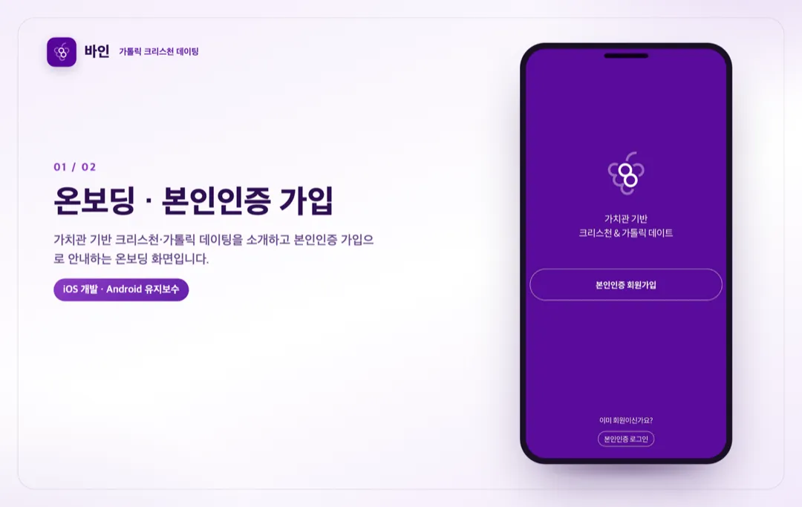
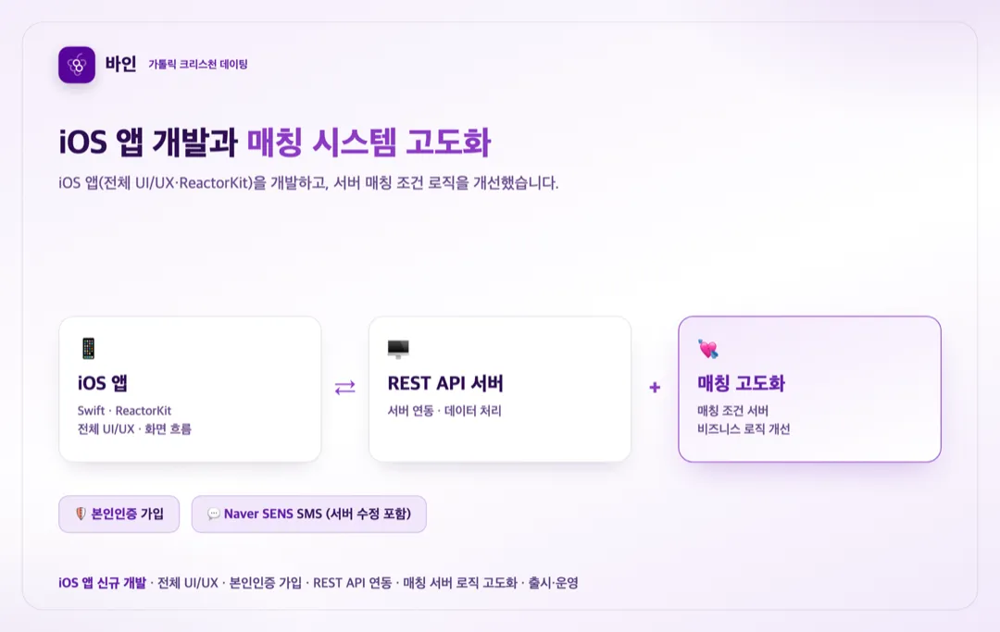

풀스택
가톨릭 크리스천 데이팅 앱 바인 iOS 개발·매칭 고도화 및 Android 유지보수
참여 기간 · 2024.09 ~ 2025.01


포트폴리오 소개
- 가톨릭 크리스천을 위한 데이팅 앱 '바인'의 iOS 앱을 신규 개발하고, 매칭 시스템을 고도화한 프로젝트입니다.
- 전체 UI/UX와 화면 흐름을 구현하고, 본인인증 가입과 서버 매칭 로직 개선까지 담당했습니다.
작업 범위
- iOS(Swift) 앱 신규 개발, ReactorKit 상태관리 아키텍처
- 전체 UI/UX 구현 및 화면 흐름 설계
- 본인인증 서비스 연동을 통한 가입 프로세스 설계
- REST API 기반 서버 연동 및 데이터 처리 로직
- Naver SENS 기반 SMS 발송 연동 (서버 수정 포함)
- 매칭 조건 로직 개선을 위한 서버 비즈니스 로직 수정
- 앱 출시·버전 관리·운영 중 버그 수정·성능 개선
- 출시 후 Android 앱까지 맡아 유지보수(버그 수정·개선·운영)
주요 업무 및 기능
- 앱: iOS 신규 개발, ReactorKit 상태관리, 전체 UI/UX
- 가입: 본인인증 연동 가입 프로세스, Naver SENS SMS
- 매칭: 매칭 조건 서버 비즈니스 로직 개선(고도화)
- 연동: REST API 서버 연동·데이터 처리
- 운영: 출시·버전 관리·버그 수정·성능 개선
주안점
- 신뢰가 중요한 데이팅 서비스에 맞는 본인인증 가입 흐름
- 매칭 품질을 좌우하는 매칭 조건 서버 로직의 정확성
- ReactorKit 기반의 일관된 상태관리와 UI/UX
문제점
- 데이팅 서비스 특성상 안전한 가입(본인인증)과 신뢰가 중요했습니다.
- 매칭 품질을 높이려면 매칭 조건 로직을 서버에서 정교하게 다뤄야 했습니다.
- 전체 UI/UX와 화면 흐름을 일관되게 구성해야 했습니다.
프로젝트 목표
- iOS 앱을 신규 개발하고 전체 UI/UX와 화면 흐름을 구현.
- 본인인증 가입과 Naver SENS SMS로 안전한 가입 경험 제공.
- 매칭 조건 서버 로직을 개선해 매칭 시스템을 고도화.
주안점
- 본인인증 가입 흐름의 신뢰성.
- 매칭 조건 서버 로직의 정확성과 개선.
- ReactorKit 기반 상태관리와 UI/UX 일관성.
프로젝트 성과
iOS 앱 신규 개발
Swift로 iOS 앱을 신규 개발하고 ReactorKit 상태관리와 전체 UI/UX·화면 흐름을 구현했습니다.
본인인증 가입·SMS 연동
본인인증 가입 프로세스를 설계하고 Naver SENS SMS 발송을 연동했습니다(서버 수정 포함).
매칭 시스템 고도화
매칭 조건 로직 개선을 위해 서버 비즈니스 로직을 수정해 매칭 시스템을 고도화했습니다.
출시·운영 및 Android 유지보수
앱을 출시하고 버그 수정·성능 개선 등 운영을 담당했으며, 출시 후 Android 앱까지 맡아 유지보수했습니다.
비슷한 프로젝트를 계획 중이신가요? 아이디어 단계여도 괜찮습니다.
프로젝트 문의하기 →